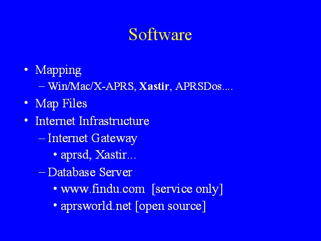

Notes:
APRS software can be divided into two categories, software used to draw maps on mapping stations, and software that supports the internet infrastructure for APRS. Mapping stations, of course, also need digital map files.
The software used to draw maps is, in essence, specialized GIS (geographic information system) software and some packages have very sophisticated capabilities, in particular the ability to layer vector (line) maps over raster graphics (image) maps.